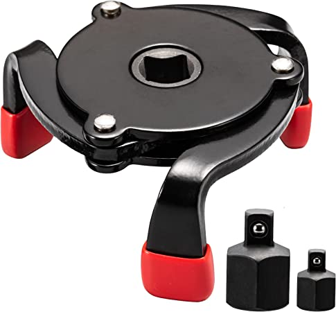
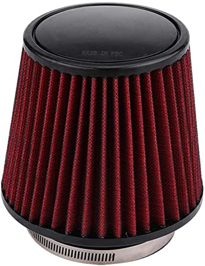
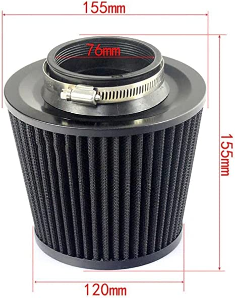
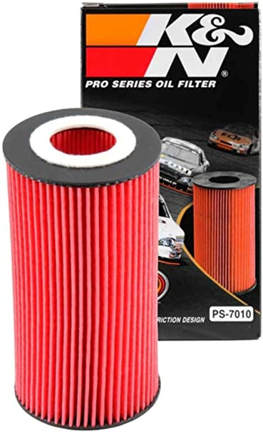
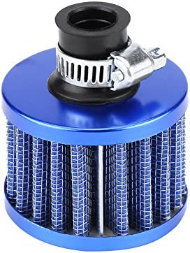

K&N Filtro de aire de cabina premium: alto rendimiento, lavable, flujo de aire limpio a su cabina: diseñado para modelos de vehículos Honda y Acura 2003-2019, VF2001
$793.35
Marca: K&N Material: Poliuretano Dispositivos compatibles: Acondicionador de aire

Autrends Llave de filtro de aceite ajustable de 3 mandíbulas, filtro extraíble universal, herramienta de coche con adaptador de 1/2 pulgadas, enchufe cuadrado de 3/8 pulgadas (negro)
$199.00
Marca: Autrends Material: Aleación de acero Estilo del cabezal: Fixed Square

Filtro de aire, filtro universal de aire Filtro de aire Entrada de alto flujo Entrada de aire Cono redondo Limpiador del filtro de aire(76mm)
$478.00
Marca: Aramox Material: Algodón Dimensiones del artículo Largo x ancho x alto: 16 x 10 x 12

AUTIAN Filtro de Aire de Alto Flujo premium Auto accesorio Fibra de Carbono 7.6cm de diámetro (Negro)
$399.00
Marca: AUTIAN Tipo de talla: Ajuste personalizado Dimensiones del artículo Largo x ancho x alto: 15.3 x 15.3 x 14.5 centimetrs

K&N Filtro de aceite de alta calidad: diseñado para proteger tu motor: se adapta a determinados modelos de vehículos AUDI/FORD/VOLVO/VOLKSWAGEN (ver descripción del producto para la lista completa de vehículos compatibles), PS-7010, Multi
$259.32
Marca: K&N Grado del producto: Pieza de rendimiento Item Weight: 0.08 Kilogramos

13mm Universal Car Clamp-On Kit de filtro de admisión de aire frío, Auto Filtro de admisión de aire para Scooter Atv Dirt Pit Bike Motocicleta Cárter de ventilación Cubierta de ventilación(Azul)
$141.69
Marca: Keenso Material: Metal Tipo de talla: Ajuste universal